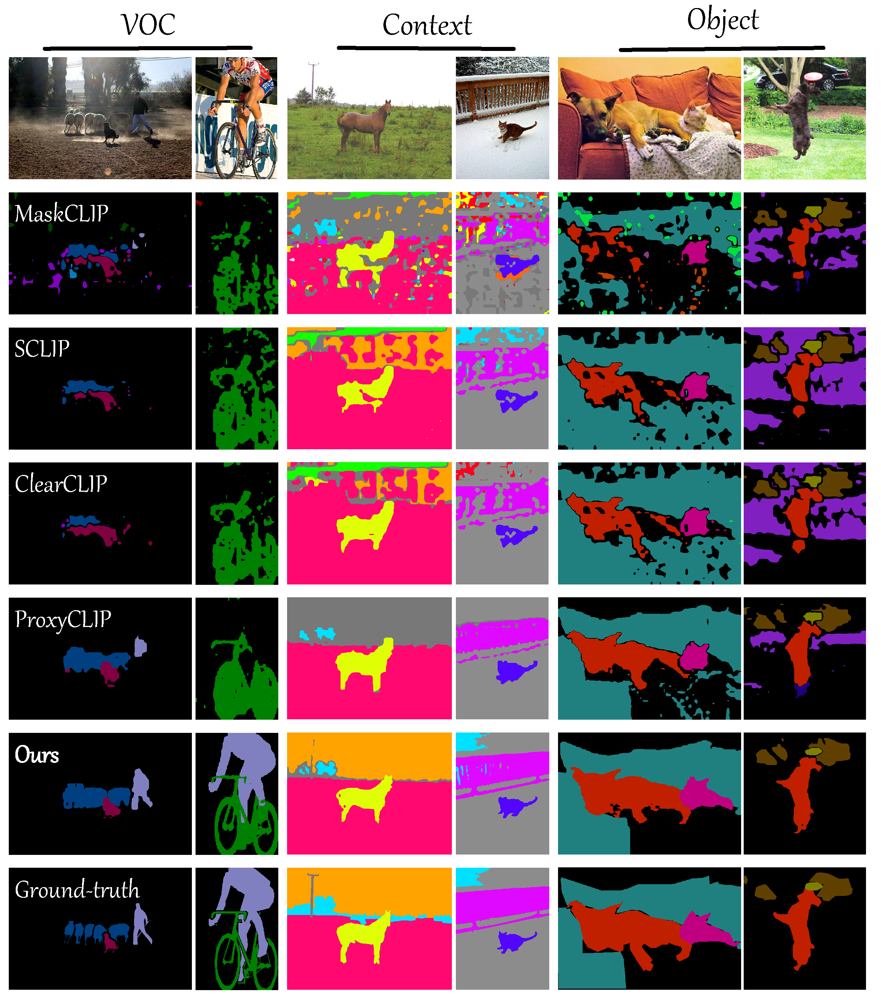

Comparison with existing methods
More segmentation results

Contrastive Language-Image Pre-training (CLIP) exhibits strong zero-shot classification ability on various image-level tasks, leading to the research to adapt CLIP for pixel-level open-vocabulary semantic segmentation without additional training. The key is to improve spatial representation of image-level CLIP, such as replacing self-attention map at last layer with self-self attention map or vision foundation model based attention map.
In this paper, we present a novel hierarchical framework, named CLIPer, that hierarchically improves spatial representation of CLIP. The proposed CLIPer includes an early-layer fusion module and a fine-grained compensation module. We observe that, the embeddings and attention maps at early layers can preserve spatial structural information. Inspired by this, we design the early-layer fusion module to generate segmentation map with better spatial coherence. Afterwards, we employ a fine-grained compensation module to compensate the local details using the self-attention maps of diffusion model.
We conduct the experiments on seven segmentation datasets. Our proposed CLIPer achieves the state-of-the-art performance on these datasets. For instance, using ViT-L, CLIPer has the mIoU of 69.8% and 43.3% on VOC and COCO Object, outperforming ProxyCLIP by 9.2% and 4.1% respectively.